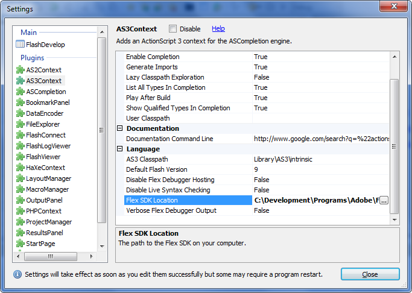
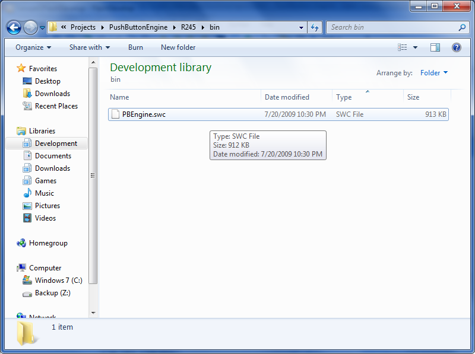
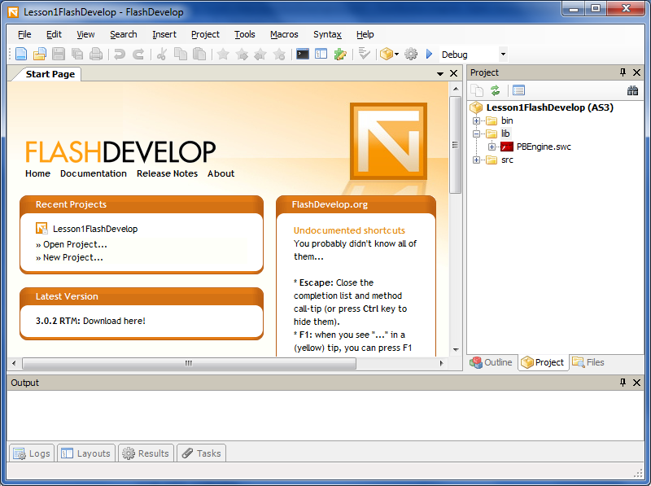
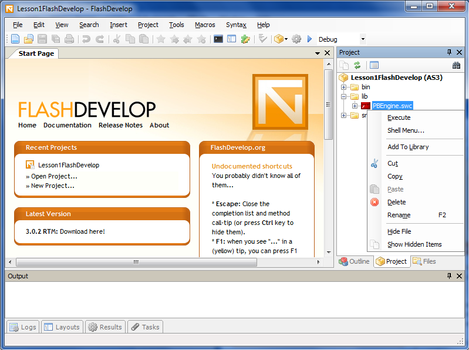
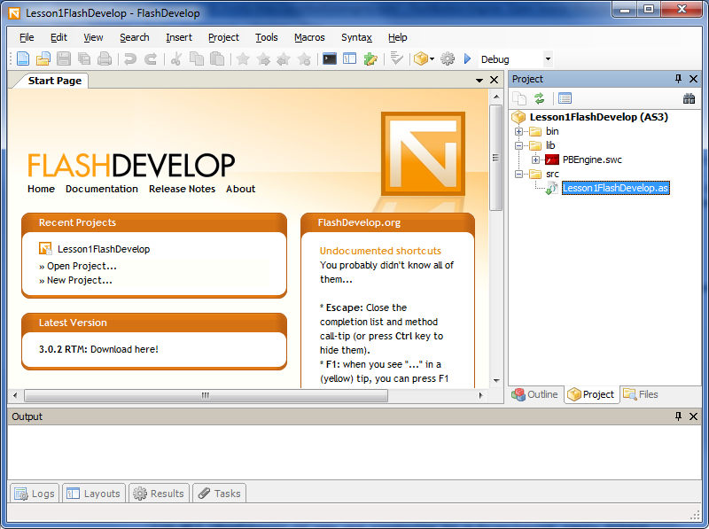
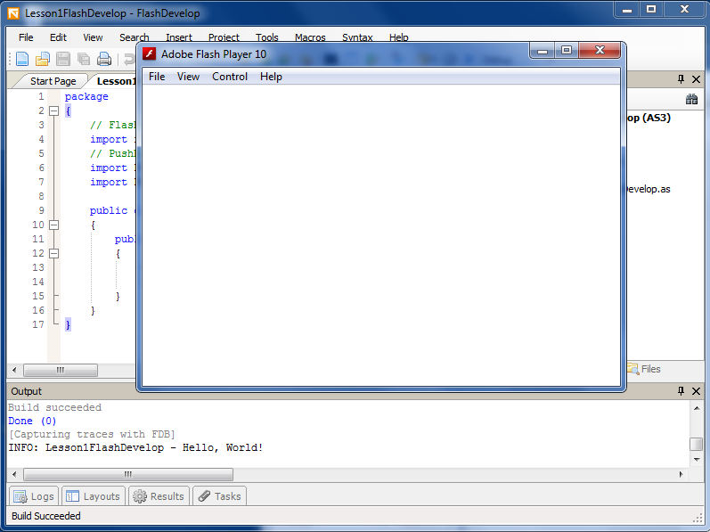

Lesson Requirements
To complete this lesson you will need to download and install a few pieces of software.
- Adobe Flash 10 Project Content Debugger - Download - Execute one time to have it register with your system.
- Adobe Flash 10 Debug Player - Download - Installation
- Adobe Flex 3 SDK - Download - To install just extract it to your own personal development folder.
- FlashDevelop - Download - Installation
- PushButton Engine - Download - To install just extract it to your own personal development folder.
Setting up FlashDevelop
The first time you run FlashDevelop after installation you need to point it to the flex 3 sdk. In the menu click Tools->Program Settings. In the list box on the left, under the plugins section click AS3Context. This brings up the properties for all ActionScript 3 development in FlashDevelop. Under the language section look for flex sdk location. Type in or navigate to the root folder of the flex 2 sdk you downloaded and extracted earlier.
Your FlashDevelop IDE is now ready for any ActionScript or Flex development.
Creating a New Project
Now we need to setup a project for the lesson. Click Project->New Project in the menu. This opens a project template window with the various types of projects for FlashDevelop. For this lesson we are only worried about creating an AS3 Project. Name it Lesson1FlashDevelop and check create directory for project check box. Click ok to continue.

You should now have FlashDevelop setup with a new project ready to go.
We now have a question to ask ourselves. "Will we be using the PushButton Engine as is or do we plan on making modifications to the source?"
If you plan to use the PushButton Engine as is, skip to the library section.
If you plan on making modifications to the PushButton Engine skip to the source section and skip the library section.
Library
With our current setup we can do pure ActionScript or Flex development. For this lesson we created a pure ActionScript project but everything applies to a Flex project as well. To use the PushButton Engine we need to link the PBEngine.swc to our project. Let's do that now.
Open Windows Explorer and navigate to where you extracted the PushButton Engine. In PushButton Engine\Bin you should have PBEngine.swc, right click and copy it.
In FlashDevelop, click the project tab on the right side. Locate the lib folder and paste PBEngine.swc into it. Your lib folder should now contain PBEngine.swc.
Right click the PBEngine.swc and click add to library. This tells FlashDevelop that we want to link this library with our project
Source
To setup using the source we need to set a class path to the PushButton Engine source code.
Right click Lesson1FlashDevelop in the project list and select properties and then click the classpaths tab.
Click the add classpath button and navigate to the folder you extracted the PushButton Engine to and click the src folder.
Now we need to set a few compiler options to compile the PushButton Engine.
Right click Lesson1FlashDevelop in the project list and select properties and then click the compiler options tab.
The first option on the list is additional compiler options. Add --keep-as3-metadata+=TypeHint,EditorData,Embed and click ok.
Hello, World!
That's right, it's time for some code!
In FlashDevelop click the projects tab if it's not already selected. In the src folder you will have Main.as. Go ahead and right click and rename Main.as to Lesson1FlashDevelop.as.
 Double click Lesson1FlashDevelop.as to open it and delete everything inside replacing it with the code below.
// ...
package
{
// Flash Imports
import flash.display.Sprite;
// PushButton Engine Imports
import com.pblabs.engine.PBE;
import com.pblabs.engine.debug.Logger;
public class Lesson1FlashDevelop extends Sprite
{
public function Lesson1FlashDevelop():void
{
PBE.startup(this);
Logger.print(this, "Hello, World!");
}
}
}
// ...
The above code is basically the minimal application for the PushButton Engine. When executed it prints the below message in the FlashDevelop output window.
INFO: Lesson1FlashDevelop - Hello, World!
Let's Build the project and test it now. Click Project->Test Movie. This will build our application and if we didn't make any mistakes a window should pop up and you should be greeted with a message in the output window.
Review
To summarize the steps of using the PushButtonEngine with the FlashDevelop IDE.
- Create a new project - Project->New Project
- ActionScript 3 section - select AS3 project or Flex 3 project
- PushButton Engine Library - copy PBEngine.swc to the project lib folder.
- Activate the Library - right click PBEngine.swc and add to library.
Conclusion
Congratulations! You just completed lesson #1, creating a project and loading the PushButton Engine library.
This can be used as a base for lesson #2 or any future projects of your own.
You can download the completed project source files for this project below.